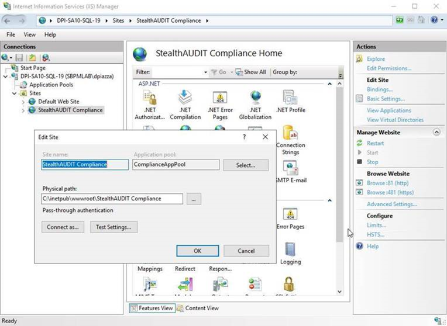

Summary: The information provided enables Diagnostic Logging and Debug Mode for the Access Information Center (AIC). Both are used to gather additional troubleshooting information.
Issue: How to Enable Diagnostic Logging and Debug Mode for the Access Information Center (AIC)
Instructions:
To enable Debug Mode and Diagnostic Logging for the AIC, the Web.config file must be altered prior to restarting the StealthAUDIT Compliance Site (via IIS).
Default Web.config location: C:\inetpub\wwwroot\StealthAUDIT Compliance\Web.config
In some environments this location may have been changed. If so, the location can be found in IIS Manager / / Sites / StealthAUDIT Compliance / Basic Settings / Physical path

To enable Debug Mode and Diagnostic Logging, change the following values in Web.config:
- Enable Debug Mode:
- Change “0” to “3” in “”
- Enable Diagnostic Logging:
- Delete “” on the line after “”
- Change “false” to “true” in “”
- NOTE: targetFramework’s value may be different depending on your AIC version, but the change to “compilation debug” remains the same (“false” to “true”)
- Save/close Web.config and restart IIS (which will automatically restart the StealthAUDIT Compliance Site)
- To restart IIS, open Command Prompt (search “cmd” in the Start Menu) and run: iisreset
After IIS has been reset, you can verify Debug Mode and Diagnostic Logging are enabled in: C:\inetpub\wwwroot\StealthAUDIT Compliance\App_Data\
First open and log-in to the AIC, and you’ll then see TracingAndLogging-service.svclog appear in the aforementioned App_Data folder. You can also verify Debug Mode has been enabled in aic.log, located in the same folder.
Once debugging is completed, it is recommended to disable Debug Mode and Diagnostic Logging:
- Disable Debug Mode:
- Change “3” to “0” in “”
- Disable Diagnostic Logging:
- Add “” (without quotes) to the line after “”
- Change “true” to “false” in “”
- NOTE: targetFramework’s value may be different depending on your AIC version, but the change to “compilation debug” remains the same (“true” to “false”)
- Save/close Web.config and restart IIS (which will automatically restart the StealthAUDIT Compliance Site)
- To restart IIS, open Command Prompt (search “cmd” in the Start Menu) and run: iisreset
Submitted by: Alex Buchta (previously submitted by Carlos Mejia)
Product: AIC
Affected Versions: All
Affected Module: AIC - Entitlement Review; AIC - Installer; AIC - Manage Resource Ownership AIC - Reporter
Dev Ticket:
Resolved In Version:
KB Type: How To